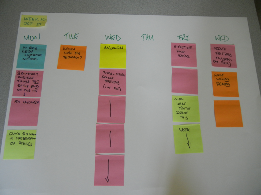

Twitter: @craftoe
Email:
| Monday | Tuesday | Wednesday | Thursday | Friday | Weekend |
Week 11
Monday
Work Due: N/A
Tools Required: Laptop, Sensor
For Next Class: Reading
In Class:
Today, we will do the following:
- Collect our sensors.
- Collect the data from our sensor.
- Label our data, and capture images of our sensor deployments.
- Upload/share data to Moodle.
- Analyze our individual data.
- Compare our data.
We may not get through to data comparison today; we’ll see how timing goes.
Tuesday
To Do:
For Wednesday, visit the Modern Device webpage regarding the passive infrared sensor that we’ll be using this week. Read about the sensor, and then read all of the material linked. Using your new-found paper reading skills, first identify which resources look most valuable. Then, focus your reading on those resources that are most valuable, and prepare for a quiz about PIR sensors based on what you think is most important.
Wednesday
Work Due: Excel Work (from Friday of last week), Quiz re: PIR
Tools Required: Laptop
For Next Class: “Sensor Pseudocode” (see Thursday)
In Class:
For Your Consideration
The question to consider is this: should everyone in electronics have to learn to program?
Question Development
First, we will develop our questions and answers regarding PIR sensors as small groups, then as a full group.
RESULTS: I captured your questions in a Google Document that you can read online.
PIR Preparation
Today, we will prepare our PIR (passive infrared) sensors for use on Friday. The programming ninjas were unable to have everything ready for you to deploy today.
The circuit you want to build is at the end of LadyAda’s documentation/tutorial on PIR sensors.
- Cut one piece of 22 AWG black wire to 10” length.
- Cut one piece of 22 AWG white wire to 10” length.
- Cut one piece of 22 AWG red wire to 10” length.
Remember, we cut wire with wire cutters. Use the correct tool for the job.
Carefully strip approximately 1/4” of shielding off of each end of the wire. Use your wire strippers. Note that the wire strippers have a gauge on the side that tells you where you should put the wire to strip it, depending on the diameter (or, if you prefer, gauge).
Observe my PIR unit. I carefully curled the end of one wire, and applied a very small amount of solder to hold the wire in place. I will later want to remove these wires, so we want to do a clean, neat job of attaching the wire on a temporary basis. Globbing solder everywhere, bridging pins… these are not the desired outcomes. A very tiny amount of solder—just enough to hold the wire in place and make a good electrical connection, is what we want.
After you solder your wires, set your multimeter into “continuity mode.” This setting has a “sound wave” icon. Touch one end of the wire and the pin you soldered it to; you should hear a beep if you have a good electrical connection at the solder joint.
Now, bring an Arduino to me for programming. I will upload code that prepares it for reading from the PIR sensor. It will leave the LED attached to pin 13 off if there is no motion, and it will light pin 13 if there is motion. Your Arduino has an LED directly on the board that connects to pin 13, so you don’t need to build any additional circuitry to test this.
Once you have a working PIR sensor, place it and your Arduino into your desk. We will integrate it into a working sensor on Friday.
Thursday
Homework:
Using Fritzing, draw a circuit with the following components:
- An Arduino.
- An SDLogger.
- A PIR sensor.
- A temperature sensor.
After you design your circuit, describe how I would need to write a program to do store the current temperature every time someone walked into the room.
Now, you might be thinking ”but I don’t write code!” Yes, this is possible. However, you are the electronics expert. You know what you have to do to build the circuit, and you know how you want it to work. Therefore, it is up to you to clearly communicate:
- What devices are connected where on your Arduino, and
- How you want the programmer to make those devices interact.
In other words, you should be able to write a very clear set of instructions (perhaps numbered) that leave no doubt as to how I, as your hired software development ninja, should write code to collect data using your sensor.
Some people might say that we are writing pseudocode, or “false code.” I say you’re trying to communicate as clearly, in as much detail as possible, about what you want your sensor to do.
When you are done, upload your Fritzing diagram and code description (.docx) to Moodle. Please use sensible filenames that include your username.
You can download Fritzing to your own computer if you wish.
Friday
Work Due: “Sensor Pseudocode”
Tools Required:
Homework: Videos, notes (see the weekend)
In Class:
Build and deploy motion + light sensor circuit.
Weekend
Homework:
This is not complete yet. –MCJ 20121031
History and Overview: http://www.youtube.com/watch?v=ORW7Qr4Nhtk
Manufacturing: http://www.youtube.com/watch?v=t9Qwx75eg8w
How they Work: http://www.youtube.com/watch?v=IvFVu7Jxa2I&NR=1&feature=fvwp
How they Work (faster): http://www.youtube.com/watch?v=ciMxaPvEPUs&feature=related
Equation Derivation: http://www.youtube.com/watch?v=n4dW1tt9X30
History
Planning documents preserved for history.
